Jurnal Eropa · Hari 4 dari 16
Tujuh belas derajat, matahari baru naik di ujung jalan, dan trotoar yang masih kosong. Sebelum koper masuk bagasi dan mobil diarahkan ke selatan, kami curi satu jam untuk jalan kaki keliling kampung sendiri — lalu sarapan dengan menu yang paling tidak Eropa.
Žižkov, Praha 3
Ini pagi terakhir kami di Praha, dan sayang kalau dihabiskan di dalam kamar. Jadi sebelum yang lain siap-siap, saya dan Amelia keluar jalan kaki. Suhunya 17 derajat — semriwing, kata orang Jawa. Untuk kami yang datang dari Tangerang, ini suhu yang bikin jalan kaki terasa seperti hadiah, bukan olahraga.
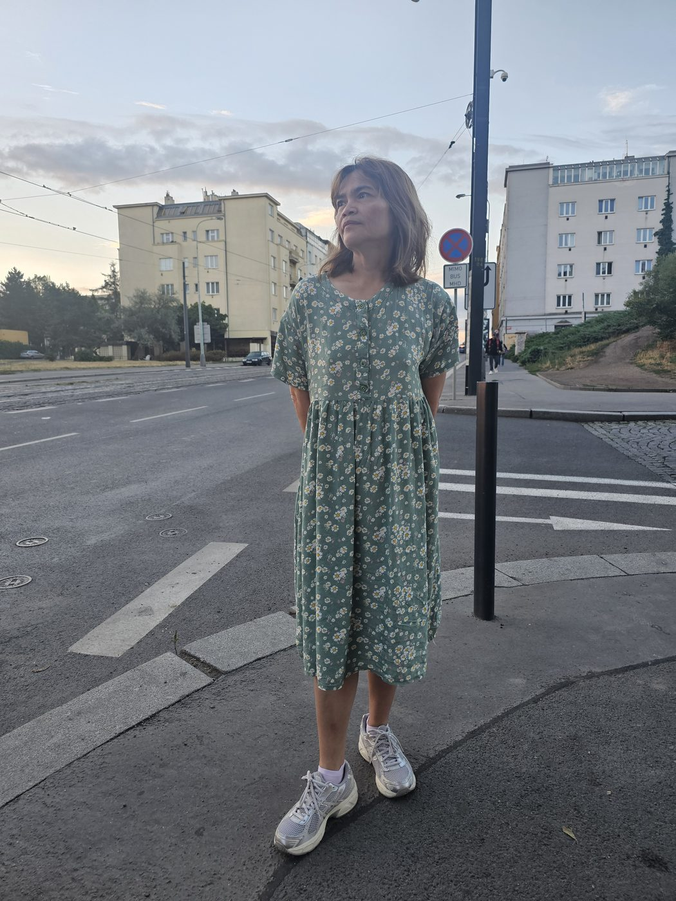
Kawasan Žižkov pagi hari itu tenang sekali. Tidak ada turis, tidak ada antrean, tidak ada orang menawarkan tiket kapal. Yang ada cuma deretan mobil parkir, rel tram yang masih diam, dan orang-orang lokal berangkat kerja sambil menunduk ke ponsel. Ini wajah kota yang tidak akan kamu lihat kalau baru keluar hotel jam sembilan.
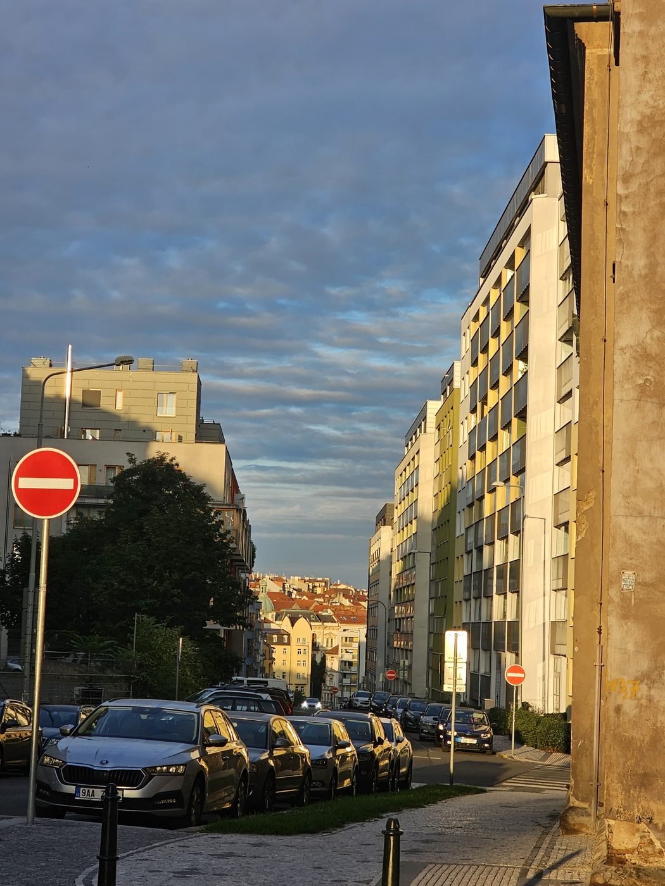
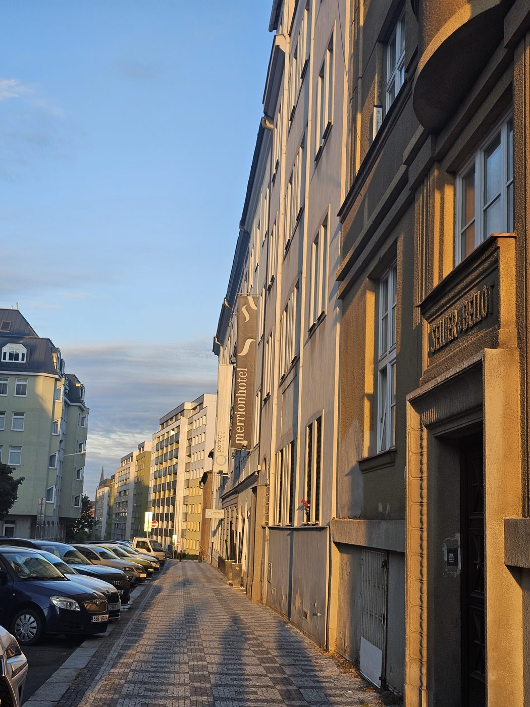
Cahaya jam tujuh pagi bikin fasad gedung yang biasa saja jadi kelihatan mahal.
Hal gratis yang paling bagus hari ini
Praha di bulan Agustus matahari terbitnya sekitar jam setengah enam, dan efeknya luar biasa: jalanan lurus yang menghadap timur berubah jadi lorong cahaya. Kami cuma berdiri di tengah jalan — yang di jam segini masih aman — dan memotret. Tidak perlu tiket, tidak perlu naik menara.
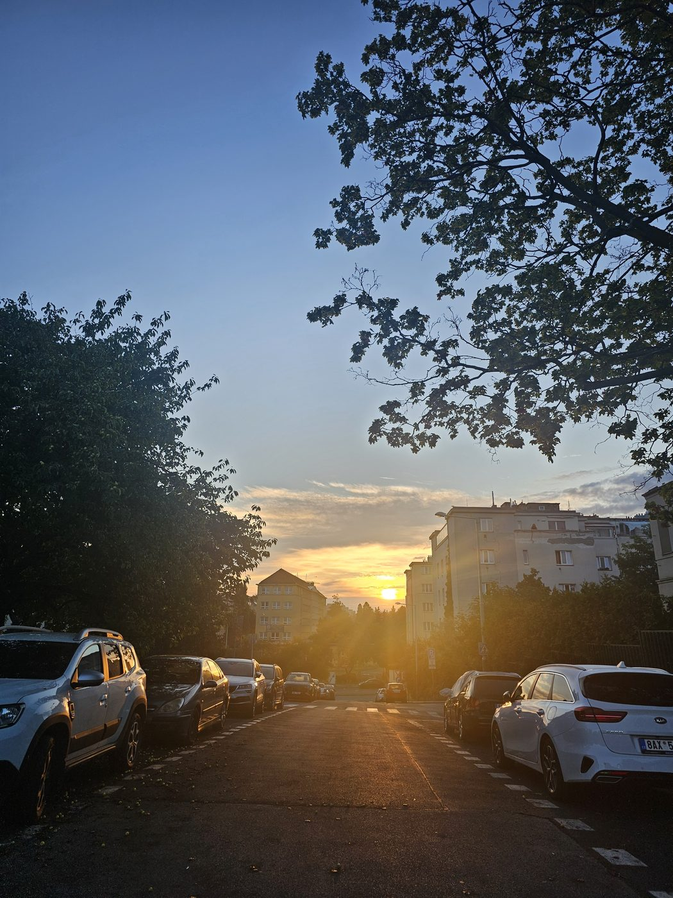
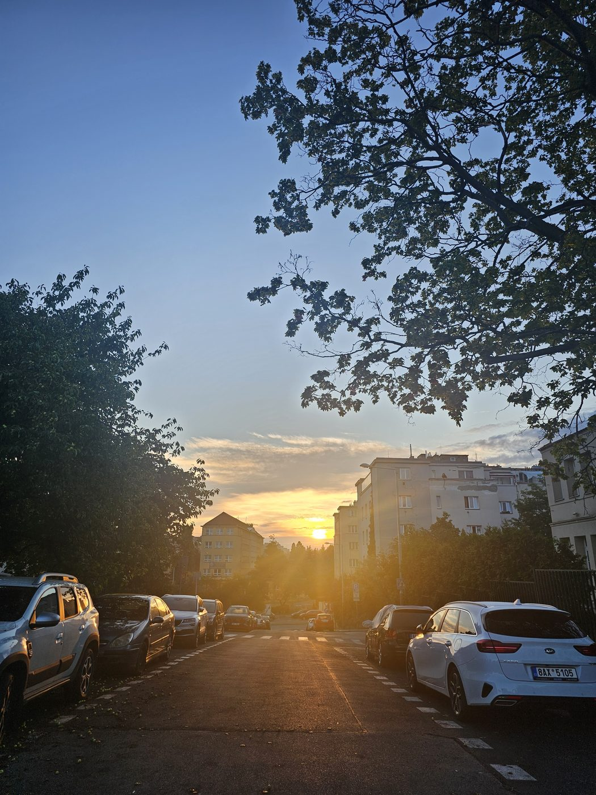
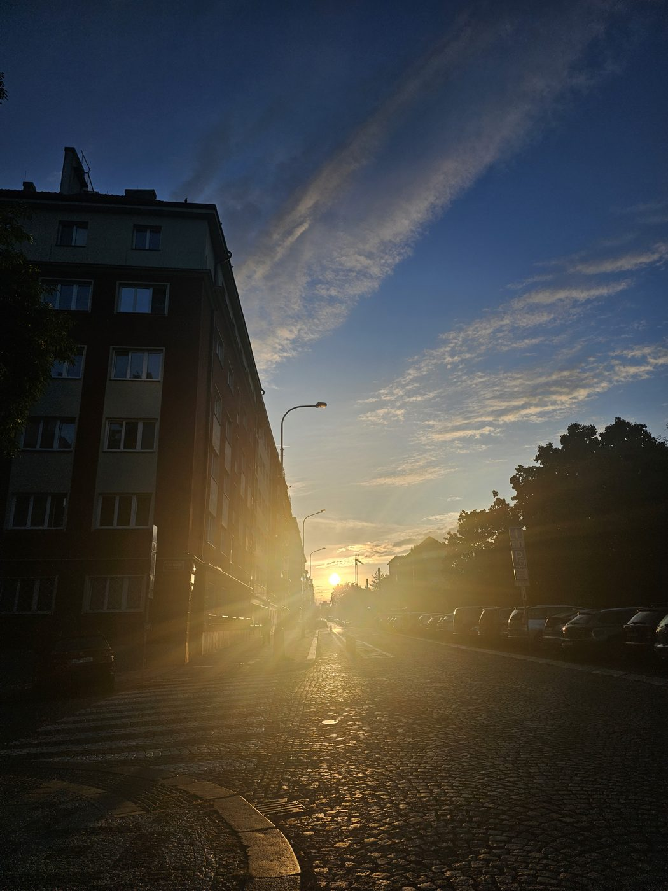
Yang bikin jalan pagi jadi lama
Rencananya jalan sebentar saja. Yang bikin molor: bak-bak tanaman di pinggir trotoar yang isinya bukan tanaman hias formal, tapi bunga-bunga campur — zinnia oranye, cosmos merah muda, dan entah apa lagi. Amelia berhenti di tiap bak. Saya berhenti karena dia berhenti.
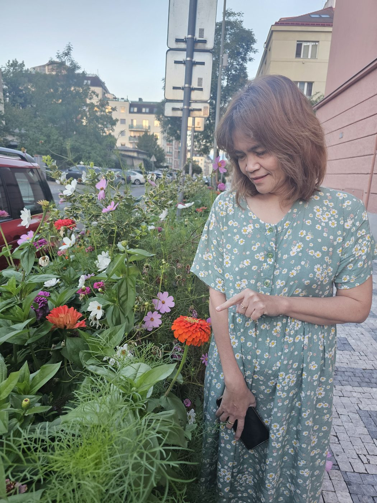
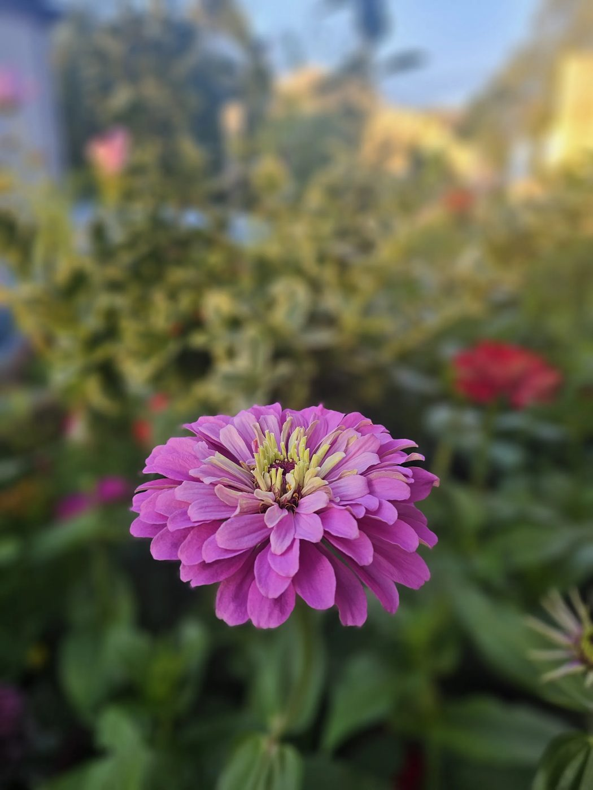
Bak bunga di trotoar itu ternyata program penghijauan kota. Sederhana, murah, dan efeknya langsung terasa.
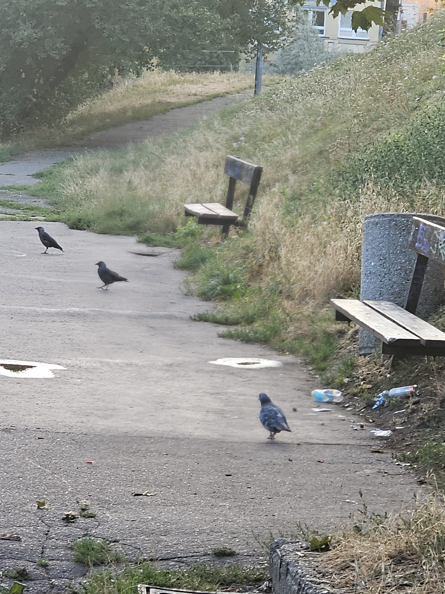
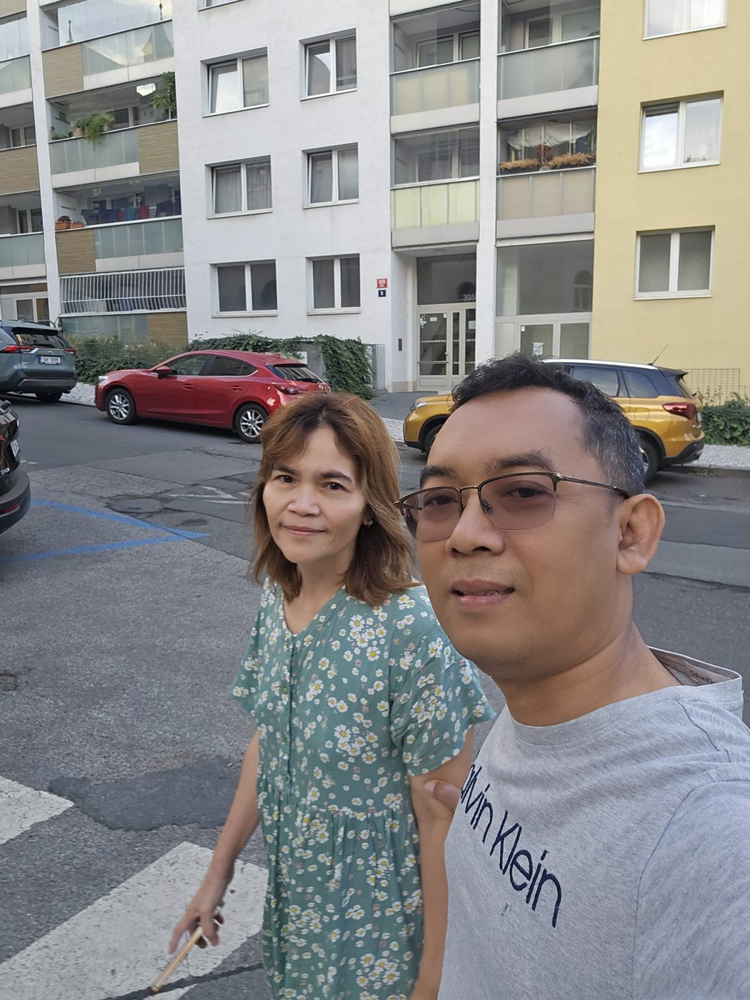
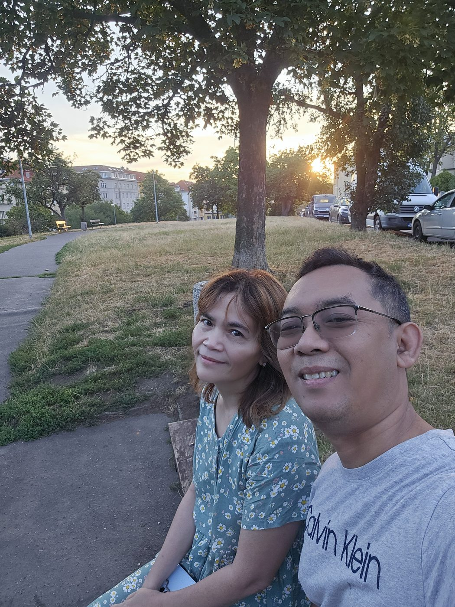
Duduk sebentar di taman, matahari di belakang. Ini bagian yang tidak ada di itinerary mana pun.
Dapur apartemen, Žižkov
Pulang jalan, perut minta diisi. Dan menu paginya bukan croissant, bukan roti dengan keju — tapi Indomie pakai telor. Kami memang bawa beberapa bungkus dari rumah, dan ini salah satu keputusan terbaik yang kami buat sebelum berangkat.
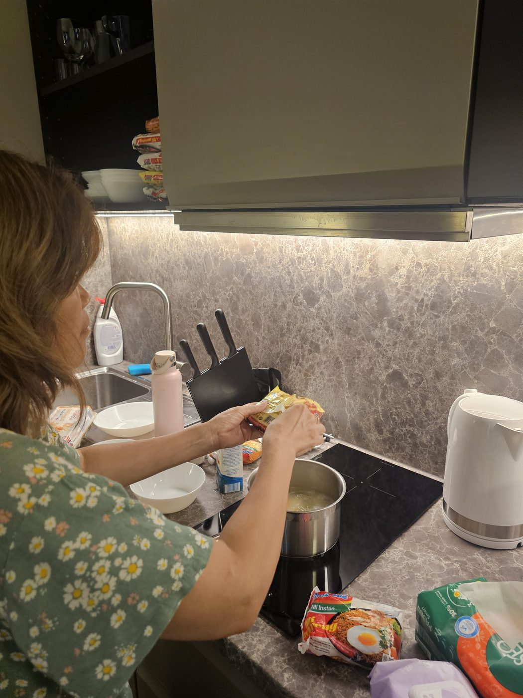
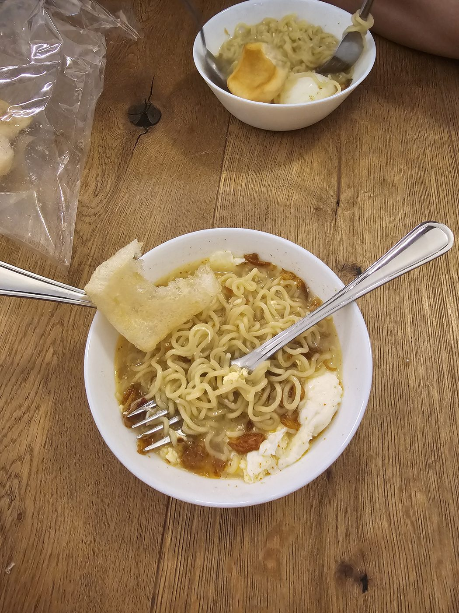
Ini juga alasan kenapa sejak awal kami pilih apartemen berdapur, bukan kamar hotel biasa. Bisa masak sendiri artinya: sarapan gratis, sarapan sesuai selera, dan tidak perlu keluar mencari tempat makan yang jam bukanya belum tentu cocok dengan jam berangkat kami.
Setelah itu tinggal beres-beres: koper masuk bagasi, kunci apartemen dikembalikan, dan mobil diarahkan ke selatan. Tujuan berikutnya Český Krumlov — kota kecil di tikungan sungai yang katanya seperti Praha versi mini.